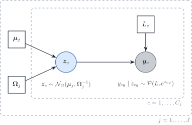

set.seed(20261015)
n_cells <- 5000
latent_cor <- 0.6
z <- MASS::mvrnorm(
n_cells,
mu = rep(log(0.5), 2),
Sigma = matrix(c(1, latent_cor, latent_cor, 1), 2)
)
y <- matrix(stats::rpois(length(z), exp(z)), ncol = 2)
round(
c(
latent = stats::cor(z)[1, 2],
log1p_counts = stats::cor(log1p(y))[1, 2],
mean_count = mean(y)
),
2
)
#> latent log1p_counts mean_count
#> 0.59 0.19 0.81In silico inference of gene regulatory networks
2026-10-15
Source:vignettes/theory-network-inference.qmd
Note 1: Notation (aligned with the DeCovarT manuscript)
Symbol Role g=1,\ldots,G genes j=1,\ldots,J cell types i=1,\ldots,N purified samples / bootstrap replicates x_{gji} latent expression of gene g in cell type j, replicate i \mathcal{X}=(x_{gji}) tensor \mathcal{M}_{G\times J\times N} of single-cell (purified) profiles \boldsymbol{\mu}=(\mu_{gj}) mean signature \mathcal{M}_{G\times J}; column \boldsymbol{\mu}_{\cdot j} is the aggregated reference for type j \boldsymbol{\Sigma}_j cell-type covariance \mathcal{M}_{G\times G} \boldsymbol{\Omega}_j\equiv\boldsymbol{\Sigma}_j^{-1} sparse precision of the type-j GGM (not a generic parameter \theta) DeCovarT treats purified draws \boldsymbol{x}_{\cdot j}^{(i)}\sim\mathcal{N}_G(\boldsymbol{\mu}_{\cdot j}, \boldsymbol{\Sigma}_j) as latent and forms bulk mixtures \boldsymbol{y}_{\cdot i}=\sum_j p_j\,\boldsymbol{x}_{\cdot j}^{(i)}. GRN inference instead targets the conditional dependence structure among genes within each purified profile—or across a pooled design matrix. When \boldsymbol{p} is already known,
CSNetestimates type-level co-expression from the same convolution; the mapping onto DeCovarT’s precision \boldsymbol{\Omega}_j is in the perspectives vignette (Su et al. 2024).
General reviews
Marginal co-expression is a poor proxy for regulation. Shared upstream TFs, cell-type programmes, and common stimuli induce correlation without a direct edge; time lags and nonlinear kinetics can hide true edges. Conditional graphical models target direct dependence via the precision \boldsymbol{\Omega}, while causal / interventional designs are needed for direction and mechanism (Gene regulatory network inference in the era of single-cell multi-omics; Svinin and Glaab (2025); Network inference in systems biology).
Badia-i-Mompel et al. (2023) review single-cell multi-omics GRN tools and prior databases. Svinin and Glaab (2025) place association, prior-informed, and causal network analyses in one taxonomy. Together they motivate separating undirected skeletons (Sec. 2) from DAG / perturbation work (Sec. 6).
Undirected probabilistic strategies
General inference
Gaussian graphical models encode conditional independence in \boldsymbol{\Omega}. The MLE exists only under sample-size / chordality conditions formalised by Uhler et al. (2012): if n is too small relative to clique size, the covariance MLE fails. Sparse \ell_1 estimation (graphical lasso; Friedman et al. (2008)) is the workhorse when p\gg n (Chiquet 2015; Menéndez et al. 2010).
Two practical workflows appear repeatedly:
- Seeds then expand — select a small discriminating gene set (e.g. low condition number / high centroid separation, in the spirit of Aliee and Theis (2021)), then grow a prior-informed network with tools such as NeKo.
- Structure then parameters — estimate a sparse skeleton (glasso, NeighbourNet, CeSpGRN), then fit continuous weights, possibly under hard zeros on \Omega_{ij} for (i,j)\notin E.
Count-aware extensions replace the Gaussian likelihood by Poisson–log-normal (PLN) or copula models (Chiquet et al. 2021, 2018) and CeSpGRN, which matters when DeCovarT moves from Gaussian convolutions to sequencing counts.
Regularisation and topological constraints
Three standard devices:
\max_{\boldsymbol{\Omega} \succ 0} \log\det\boldsymbol{\Omega} - \operatorname{tr}(S\boldsymbol{\Omega}) \quad\text{s.t.}\quad \boldsymbol{\Omega}_{ij}=0\;\forall\,(i,j)\notin E \tag{1}
(hard covariance selection);
\max_{\boldsymbol{\Omega} \succ 0} \log\det\boldsymbol{\Omega} - \operatorname{tr}(S\boldsymbol{\Omega}) - \sum_{i\neq j}\lambda_{ij}\,|\boldsymbol{\Omega}_{ij}| \tag{2}
(edge-specific / hybrid penalties); and structured group or fused graphical lasso for hubs, modules, or shared biological constraints (Chiquet 2015). Trees and chordal graphs remain PD-friendly (Uhler et al. (2012)). DeCovarT’s affine spectral shift of a binary adjacency is a constructive PD completion compatible with hard zeros off E.
Algorithm unrolling and deep inference
Algorithm unrolling turns iterative sparse-precision solvers into trainable layers (Monga et al. (2021); GLAD). For hierarchical count ecosystems, Chaussard et al. (2024) introduce PLN-Tree: a tree-structured extension of PLN with backward Markov variational inference and identifiability results—an attractive route when taxonomy or gene modules should inform \boldsymbol{\Omega}.
Prior knowledge and PPI
Priors from TF–target, chromatin, and PPI databases can enter as \lambda_{ij} masks or as Bayesian edge probabilities (Badia-i-Mompel et al. (2023); Svinin and Glaab (2025); NeKo). This is the undirected analogue of pathway contextualisation in Sec. 6: association graphs become biologically constrained without claiming full causality.
Per-type precisions from single-cell profiles
The reproducibility book estimates one sparse precision \boldsymbol{\Omega}_{j,t} per labelled type j and time t. It uses the Suppinger gastruloid resource (Suppinger et al. 2023) and a 500-gene panel selected for between-type separation. The resource is a single technical scRNA-seq experiment. Cells are therefore draws from one specimen, and the estimate targets the within-type cell-to-cell covariance: the linear layer of the one-replicate regime, not a between-specimen covariance.
| Estimator | Input | Sparsity device | Exported object | Main caveat |
|---|---|---|---|---|
ppcor baseline |
Gaussian table, n>p | none; t test, BH | SPD refit on the support | n>p only |
glasso |
correlation of \log(1+y) | \ell_1 off the diagonal; EBIC path | \widehat{\boldsymbol{\Omega}}_R, rescaled to the data | same detection limit as any \ell_1 fit |
SILGGM D-S_GL
|
nonparanormal scores | glasso, one Newton step, global FDR | SPD refit on the FDR support | debiased matrix is dense |
PLNnetwork |
UMI counts, offset \log L_c | \ell_1 on the latent precision | latent Gaussian precision | variational; no edgewise FDR |
corpcor shrinkage |
Gaussian table | none; correlations shrunk to 0 | dense \widehat{\boldsymbol{\Sigma}} | no graph |
Sources for each estimator:
- graphical lasso (Friedman et al. 2008), fitted with
glassoand an unpenalised diagonal (huge(Zhao et al. 2012) penalises it, see Sec. 5.5); - nonparanormal map (Liu et al. 2009);
- de-sparsified graphical lasso (Jankova and Geer 2015) with the global FDR rule (Liu 2013; Zhang et al. 2018);
- Poisson–lognormal network (Chiquet et al. 2018);
- shrinkage covariance (Schäfer and Strimmer 2005), judged by held-out Gaussian log-likelihood (Sec. 5.6).
The penalty is chosen by EBIC (Foygel and Drton 2010) with a safeguarded log-interval search between \lambda_{\max}=\max_{g\neq g'}|R_{gg'}| and \lambda_{\min}\asymp\sqrt{\log p/n}. Three alternatives are documented:
- StARS (Liu et al. 2010), kept as a diagnostic because it costs B\times L fits;
- thresholded adaptive validation, when the target is the support (Laszkiewicz et al. 2021);
- a graphical horseshoe, in place of a penalty path (Li et al. 2019).
Critical review: near-diagonal precisions
On Suppinger, the huge graphical lasso selected by EBIC returns mostly diagonal \widehat{\boldsymbol{\Omega}}_{j,t}: no conditional dependence among panel genes. Four explanations compete with “no regulation”, and the first three are checkable.
Pipeline behaviour to rule out first
Warning 1: Check the reproducibility code before the method
Reading
scripts/03_01_grn_huge.R,R/ebic_regularisation_path.R, and thehuge1.5.1 sources (huge.glasso()andsrc/huge_core.cpp) showed three ways to obtain a diagonal precision that are unrelated to biology. All three are now corrected in the reproducibility code; the Suppinger networks must be refitted before the diagonal result is interpreted.
- One constant gene emptied the whole type. If any panel gene was constant across the cells of a type (typically all-zero), the script returned a diagonal covariance for all 500 genes of that type. Fix: the constant gene is left out of that type’s graph and recorded; pairwise scores use the genes both types keep. The presence filter of the feature-selection chapter (detection and positive variance in every type) prevents the case upstream.
- Failed solves fell back to a diagonal. When a
hugesolve failed at a small penalty,diagonal_precision_fallback()replaced it, and EBIC could then select that diagonal. Fix: a failed penalty is dropped from the path and reported infailed_lambda.- Two scales were mixed.
huge.glasso()runsscale(x)and fits the correlation matrix R. The script computed the \lambda endpoints and the EBIC log-likelihood from S=\operatorname{cov}(\log(1+y)). The log-likelihood \log\det\widehat{\boldsymbol{\Omega}}_R-\operatorname{tr}(S\widehat{\boldsymbol{\Omega}}_R) combined a correlation-scale precision with a covariance-scale S, which biases EBIC. Fix: the solver is nowglasso::glasso(R, penalize.diagonal = FALSE); endpoints and EBIC use R; the selected fit is exported as D^{-1/2}\widehat{\boldsymbol{\Omega}}_R D^{-1/2} and D^{1/2}WD^{1/2}, with D=\operatorname{diag}(S).On a simulated chain of 30 genes with n=300, the corrected path recovers all 29 edges, with 20 false positives at the EBIC penalty. The exported covariance keeps the sample variances exactly.
A screening threshold, not an estimated absence
For any \lambda, the graphical lasso on a correlation matrix returns a diagonal \widehat{\boldsymbol{\Omega}} exactly when \max_{g\neq g'}|R_{gg'}|\le\lambda. This holds with or without a penalised diagonal: at the diagonal solution, the stationarity conditions reduce to |R_{gg'}|\le\lambda off the diagonal (Mazumder and Hastie 2011). Chiquet’s review states the same: “A large enough penalty level produces an empty graph” (Chiquet 2015, 39). Our path starts at that value.
Two orders of magnitude make an empty graph likely on scRNA-seq.
- Noise level. Under independence, the largest of the p(p-1)/2 sample correlations is about \sqrt{4\log p/n}: 0.35 for p=500 and n=200. To control false edges, \lambda must sit near that level.
- EBIC cost per edge. With \gamma=0.5, EBIC charges \log n+4\gamma\log p\approx17.7 per edge at the same p and n. One edge with partial correlation \rho raises twice the log-likelihood by about -n\log(1-\rho^{2})\approx n\rho^{2}, so only |\rho|\gtrsim0.30 survives. That is the intended effect of \gamma>0, which corrects “the tendency of the usual BIC […] to choose overly dense graphs in the high-dimensional setting” (Chiquet 2015, 43).
Neighbourhood selection has the same behaviour. Its finite-sample rule for \lambda sets every coefficient to zero when all |r_{ab}|\le\tilde\Phi^{-1}\{\alpha/(2p^{2})\}/\sqrt n. That bound is about 0.55 for p=1000, n=100 and \alpha=0.05 (Meinshausen & Bühlmann 2006, eq. 9). Their signal-strength assumption states the general point: edges with partial correlation below order n^{-(1-\xi)/2} are not detected. A diagonal estimate therefore says that no partial correlation is large relative to \sqrt{\log p/n}. It does not say that the partial correlations are zero.
Measurement attenuation on counts
On UMI counts, the observed covariance is the latent covariance plus a diagonal sampling term. Under the Poisson–lognormal model of Figure 1, \operatorname{Var}(y_{cg}) contains \mathbb{E}(L_{c}e^{z_{cg}}) from Poisson sampling, while covariances between genes come only from the latent layer. Every correlation is therefore attenuated, most strongly for lowly expressed genes (Sarkar and Stephens 2021; Chiquet et al. 2021). Attenuation pushes \max|R_{gg'}| under the screening threshold of Sec. 4.2.

Figure 1: Poisson–lognormal measurement layer for one cell type. The latent log-expression \boldsymbol{z}_c carries the precision \boldsymbol{\Omega}_j; the observed counts add independent Poisson noise given \boldsymbol{z}_c and the library size L_c. Off-diagonal covariances of \boldsymbol{y}_c come only from \boldsymbol{z}_c; the Poisson term adds to the diagonal only.
A two-gene simulation shows the size of the effect at a typical 10x depth.
The hypothesis that raw-count variance reflects per-gene autoregulation or feedback has to be read against this simulation. In a Gaussian graph the precision diagonal is \omega_{gg}=1/\operatorname{Var}(x_g\mid\boldsymbol{x}_{-g}). That is the variance the other panel genes do not explain. It mixes:
- transcriptional bursting and autoregulation;
- regulators that are not on the panel;
- on counts, Poisson sampling.
S alone cannot separate these terms. At droplet depths, sampling is the largest share for most genes (Sarkar and Stephens 2021). A measurement layer (PLNnetwork, Table 1) is therefore the principled correction, not a change to the penalty.
A panel built against within-type edges
The panel is selected for a large between-type to within-type ratio. Its genes therefore have, by construction, small within-type variance relative to the type shifts. Edges are estimated within a type, where that variance is mostly sampling noise (Sec. 4.3). Discriminating genes and network genes need not coincide. Use one of two designs:
- estimate the network on a within-type variable panel (a union of per-type highly variable genes) and project it onto the discriminative panel;
- accept that the discriminative genes are close to conditionally independent within each type. That result is informative for DeCovarT: the covariance then adds little to the mean signature.
Remedies, critically
(i) Unpenalised partial correlations first
When n>p, the precision \widehat{\boldsymbol{\Omega}}=S^{-1} needs no penalty. ppcor returns the partial correlations \rho_{gg'\mid\mathrm{rest}}=-\omega_{gg'}/\sqrt{\omega_{gg}\omega_{g'g'}} and a t test with n-p degrees of freedom (Kim 2015). That gives:
- an edgewise test with FDR control, which the lasso path lacks;
- no diagonal penalty;
- a direct check of whether the partial correlations are small or the penalty is too strict.
Rescaling back to a precision uses the conditional variances, \omega_{gg}=1/\operatorname{Var}(x_g\mid\boldsymbol{x}_{-g}), not the marginal ones. Marginal rescaling understates \omega_{gg} by the factor 1-R^{2}_{g\cdot\mathrm{rest}}. After the non-significant partial correlations are set to zero, refit under those zeros (Eq. 1) to restore positive definiteness.
The limits are sharp:
- With p\ge n,
ppcoruses a Moore–Penrose inverse and returns no test. At 500 genes, only the largest types qualify, unless the panel is cut to a few dozen genes per type. - Even when p<n, the t test loses power as p/n\to1.
- The shrinkage partial correlation of
GeneNet/corpcor(Schäfer and Strimmer 2005) is the unpenalised-graph analogue for p\ge n. It shrinks towards the identity, so it attenuates as well. - Chiquet notes that the MLE needs “n to be larger than p to be able to even define this estimator” (Chiquet 2015, 38). That is the regime of this baseline, and the reason sparsity or shrinkage is needed below it.
(ii) Neighbourhood selection and SPACE
Meinshausen & Bühlmann (2006) regress each gene on all others with a lasso, \theta^{a}_{b}=-\omega_{ab}/\omega_{aa}. They combine the neighbourhoods by the AND or the OR rule, and prove consistent graph recovery under four assumptions:
- a sparsity bound on the degree;
- a minimum signal strength;
- a “neighbourhood stability” (irrepresentability) condition, which cannot be relaxed;
- \operatorname{Var}(x_a\mid\boldsymbol{x}_{-a}) bounded away from 0.
Advantages over the graphical lasso:
- a smaller sample size for consistent selection: of order d\log p against d^{2}\log p for the graphical lasso, “even if the corresponding ‘irrepresentability conditions’ are not strictly comparable” (Chiquet 2015, 41). The graphical lasso also estimates the precision itself;
- the p lasso fits are independent and parallel, O(np\min(n,p)) each, against O(p^{3}) per penalty;
- there is no positive-definiteness constraint, so a node-wise model can use a count GLM per gene.
Costs:
- no estimate of the precision itself, only its support;
- an asymmetric \hat\theta;
- “all variables are assumed to share the same variance in this formulation” (Chiquet 2015, 41), so standardise the genes first;
- the same screening behaviour (Sec. 4.2).
The irrepresentability conditions also differ. Ravikumar et al. (2011) give the graphical lasso’s version on \boldsymbol{\Sigma}\otimes\boldsymbol{\Sigma}. In Zhang & Zou’s AR(1) and AR(3) examples it fails for a range of coefficients where the D-trace condition still holds (Zhang and Zou 2014).
SPACE (Peng et al. 2009) makes the regressions joint and symmetric. It penalises \lambda\sum_{g<g'}|\rho^{gg'}| directly, with \beta_{gg'}=\rho^{gg'}\sqrt{\omega_{g'g'}/\omega_{gg}}. The consequences:
- No diagonal penalty. It re-estimates the diagonal 1/\hat\omega_{gg} from residual variances, alternating with the penalised step (usually within three iterations).
- Better hub recovery. Penalising globally rather than node by node recovers hubs better on power-law graphs. Uniform-degree graphs show no gain.
- Positive definiteness is not guaranteed.
For TF-hub structures, SPACE is the stronger candidate. Chiquet describes it as embedding “the computational advantage of neighborhood selection while estimating the conditional variance as in the graphical-Lasso” (Chiquet 2015, 42).
CLIME is a third regression-type estimator worth a sensitivity run. It fits one constrained \ell_1 problem per column, so it needs a symmetrisation step afterwards. Chiquet notes that “no particular assumption like a irrepresentability condition – which can never be established in practice – is required” (Chiquet 2015, 42).
All three regression methods need the same order of signal as the graphical lasso. They change the bias, the assumptions and the computation, not the detection limit.
(iii) Joint and differential networks across types
Early gastruloid slots contain one dominant population and several types with few cells. Estimating each \boldsymbol{\Omega}_{j} alone wastes the shared structure. The relevant families differ in what they share.
- Shrunk covariances. The intertwined lasso fits each type on \tilde S^{(j)}=\alpha S^{(j)}+(1-\alpha)\bar S, with \bar S the cell-weighted pooled covariance and \alpha chosen by cross-validation (Chiquet et al. 2011; Chiquet 2015, 49–50). It is the simplest way to borrow strength from the dominant population.
- Shared support, free weights. The group graphical lasso (Danaher et al. 2012) and the cooperative lasso (Chiquet et al. 2011, 2012) share the edges across types. The cooperative lasso also assumes sign coherence: an edge may change magnitude between types but not sign, because “sign swaps are very unlikely” (Chiquet 2015, 51). This matches the idea of penalising sign changes while leaving weights free.
- Shared weights. The fused graphical lasso penalises |\omega^{(j)}_{gg'}-\omega^{(j')}_{gg'}| (Danaher et al. 2012). A PLN version also exists (Zhai et al. 2026).
- Block priors. SIMoNe places a stochastic block model on the edges (Chiquet et al. 2009; Ambroise et al. 2009; Holland et al. (1983)). Edges within a module are penalised less than edges between modules, and the modules are learnt by variational EM. The rationale: “while sparsity is necessary to solve the problem when few observations are available, biasing the estimation of the network towards a given topology can help us find the correct graph in a more robust way” (Chiquet 2015, 44).
- The difference itself. The D-trace loss \tfrac12\langle\boldsymbol{\Omega}^{2},S\rangle-\operatorname{tr}\boldsymbol{\Omega} (Zhang and Zou 2014) extends to \boldsymbol{\Delta}=\boldsymbol{\Omega}_{1}-\boldsymbol{\Omega}_{2} (Yuan et al. 2017). The rewiring is estimated without estimating either network, and only \boldsymbol{\Delta} needs to be sparse (Plaksienko et al. 2025).
Separate fits per type, as in our pipeline, are defensible only with one penalty per type. A common \lambda “is sensible […] provided that the C samples have similar sizes and originate from similar distributions, in particular regarding scaling and sparseness” (Chiquet 2015, 49). Our types differ by orders of magnitude in n_j, hence a per-type EBIC search on the correlation scale.
The caveat for DeCovarT. DeCovarT separates types partly through their covariance differences. Fusion shrinks those differences, and with a dominant population it pulls the rare types towards the dominant network. Prefer shared-support or sign-coherent penalties to fused weights. Use \boldsymbol{\Delta}-estimation when the question is rewiring, and check that held-out type discrimination does not degrade.
(iv) When can sparse recovery work?
Keep three thresholds apart; they are often conflated.
-
The estimator exists. With the off-diagonal-only penalty, the graphical lasso has a unique solution for any \lambda>0 once S_{gg}>0, even when p>n (Carter 2025). No sparsity is needed. The penalised-diagonal version (
huge) exists as well. - The MLE on a fixed graph exists. Dempster’s refit under the zeros of E (Eq. 1) needs n at least the maximum-likelihood threshold of the graph. That threshold lies between the clique number and the treewidth plus one, and equals the clique number for chordal graphs (Uhler 2012; Bernstein & Outlaw 2023).
- The graph is recovered. This requires n\gtrsim d^{2}\log p for maximum degree d, an irrepresentability condition, bounded eigenvalues, and a minimum |\omega_{gg'}| (Ravikumar et al. 2011). Chiquet draws the practical consequence: “this should prevent blindly applying the graphical-Lasso in situations where the sample size n is too small compared to p. Similarly, when the presence of hub nodes with high degree is suspected, the estimated graph should be interpreted with care” (Chiquet 2015, 40).
The third condition decides the matter here. With p=500 and d=10, d^{2}\log p\approx620 before constants. Any type with fewer cells is outside the recovery regime, and hubs raise d. Heinävaara et al. (2016) report that on models derived from gene expression the irrepresentability conditions never held, even for modest networks. \ell_1 methods also failed when dependencies were nearly linear. These conditions involve the unknown \boldsymbol{\Sigma}: “we can never verify them on real data” (Chiquet 2015, 77). Even inside the supported regime, “sparse GGM fail to reconstruct real regulatory networks at a low false positive rate, when only based upon transcriptomic data” (Chiquet 2015, 60). They can be probed by simulation: draw precisions with simulate_hierarchical_grn_moments() at the observed n_j, fit, and measure recovery.
(v) Penalising the diagonal
With a penalised diagonal, the stationarity conditions give W_{gg}=S_{gg}+\lambda for W=\widehat{\boldsymbol{\Omega}}^{-1} (Friedman et al. 2008; Mazumder and Hastie 2011). huge does this on the correlation scale, so W_{gg}=1+\lambda, and an isolated gene gets \hat\omega_{gg}=1/(1+\lambda).
What the diagonal penalty does:
- It does not move the empty-graph threshold (Sec. 4.2).
- It adds \lambda to every variance. Compared with the off-diagonal-only fit, the implied correlations shrink by about 1/(1+\lambda), so the surviving partial correlations and the diagonal of the precision are both biased downwards.
- On counts it acts in the same direction as Poisson sampling (Sec. 4.3).
Its main justifications are numerical (CLIME, the full-norm D-trace) or a Laplace prior on every entry. For DeCovarT, leave the diagonal free, or penalise a scale-free quantity. The original glasso package (Friedman et al. 2008) penalises the diagonal by default (penalize.diagonal = TRUE in version 1.11), so the argument must be set to FALSE; huge.glasso() offers no such switch. The reproducibility pipeline now uses glasso::glasso(R, penalize.diagonal = FALSE).
Iterative schemes that readjust the diagonal. The partial correlation graphical lasso, PCGLASSO (Carter, Rossell & Smith 2024), writes \boldsymbol{\Omega}=\boldsymbol{\theta}^{1/2}\boldsymbol{\Delta}\boldsymbol{\theta}^{1/2}, with \boldsymbol{\theta} diagonal and \boldsymbol{\Delta} of unit diagonal. It penalises \rho\sum_{g\neq g'}|\Delta_{gg'}|, the partial correlations only. The estimate is scale invariant, which the graphical lasso is only after standardisation.
Carter and Molinari (2025) prove that it exists for n<p when a logarithmic diagonal term has weight c<1-k/p. They compute it by alternating two convex blocks:
- the partial correlations \boldsymbol{\Delta} given the diagonal;
- the diagonal given \boldsymbol{\Delta}.
The R package is PCGLASSO on GitHub. This is the recent “off-diagonal first, then readjust the diagonal” scheme. SPACE (Sec. 5.2) is its regression-based ancestor. The simplest version of the same idea is a two-stage fit: select the support with any penalised method, then refit \boldsymbol{\Omega} without penalty on that support (Eq. 1).
(vi) Does DeCovarT need a sparse precision?
Sparsity buys four things:
- Existence when p\ge n. Any regulariser provides this, including ridge and shrinkage, so sparsity is not necessary.
- Lower variance, with |E|+p free parameters instead of p(p+1)/2.
- Interpretation: zeros are conditional independences.
- The recovery theory of Sec. 5.4.
DeCovarT uses only the second of these. Its likelihood needs \boldsymbol{\Sigma}_{j}, and the bulk covariance \sum_{j}p_{ji}^{2}\boldsymbol{\Sigma}_{j} of the convolution has no sparse precision, even when every \boldsymbol{\Omega}_{j} is sparse. The graph matters for interpretation and for priors (Sec. 2.4), not for the deconvolution likelihood.
What cov.output returns. huge(..., cov.output = TRUE) returns the dual matrix of the same fit, W=\widehat{\boldsymbol{\Omega}}^{-1}. It is neither the plain inverse of a separate estimate nor a refit under the zeros. On the selected edges, W_{gg'}=R_{gg'}+\lambda\,\mathrm{sign}(\hat\omega_{gg'}); off them, |W_{gg'}-R_{gg'}|\le\lambda; and W_{gg}=1+\lambda. A topology-constrained covariance, which matches S exactly on the diagonal and on the edges, is Dempster’s refit (Eq. 1). An empty graph discards all covariance and reduces DeCovarT to an independent-gene model. A dense, well-conditioned estimate is then the safer plug-in:
- Ledoit–Wolf or Schäfer–Strimmer shrinkage;
- factor-plus-diagonal;
- the PLN latent covariance.
Judge it by held-out Gaussian log-likelihood and by deconvolution accuracy, not by graph recovery. The reproducibility book implements this as a fifth strategy: Schäfer–Strimmer shrinkage of the correlations with the variances kept, \hat\lambda^{\ast} in closed form, and K-fold held-out log-likelihood against the diagonal, the glasso refit and the PLN covariance (Schäfer and Strimmer 2005). Chiquet recommends K-fold cross-validation when prediction, not the true model, is the target (Chiquet 2015, 78).
What the sparse-GGM review supports
Chiquet (2015) reviews sparse GGM inference in chapter 2 and sparse regularisation in chapter 3. Page numbers below are the printed pages; the PDF page is the printed page plus 10.
Naive gene selection before any penalty. The review does not recommend a data-driven pre-filter of genes before a GGM. It offers three related points.
- Screening exists in regression. Marginal-correlation “sure screening” aims “to reduce the initial number of predictors p to an order similar to n”. Safe rules discard only variables that cannot enter the model, whereas “the strong rule is not safe and a relevant variable may be discarded” (pp. 74–75).
- For the graphical lasso, the safe rule is exact: the block-diagonal decomposition cited on p. 39 (Mazumder and Hastie 2011). A gene with \max_{g'}|R_{gg'}|\le\lambda is isolated at that \lambda. Removing it beforehand changes nothing. Our inference: this is the only lossless naive filter. Filters by variance, marginal correlation or differential expression change the conditioning set of every other gene. Partial correlations are defined relative to the panel, so they change too.
- Chiquet’s own analyses keep p at or below n with knowledge-based gene sets: 26 genes for n=133 (p. 48), 91 proteins for n=60 (p. 59). They also restrict candidate edges to TF–target pairs when that knowledge exists (p. 61). Low-order partial-correlation tests are set aside for their cost, or for “strong assumptions […] that correspond to regimes never attained in real situations” (p. 38).
For DeCovarT, the discriminative panel of the feature-selection chapter is a choice made for the deconvolution, not a GGM screen. Keep the presence filter, report \max|R_{gg'}| per type, and for small types reduce p towards n_j before reading the graph.
Approaches worth trying.
| Approach | What it adds here | Verdict | Pages |
|---|---|---|---|
| Neighbourhood selection with resampling | selection at n\asymp d\log p; “quite competitive, especially when coupled with additional bootstrap or resampling techniques” | second opinion for large types | 40–41 |
| CLIME | no irrepresentability assumption | sensitivity run | 41–42 |
| SPACE and its convex refinement | hubs; conditional variances estimated, not penalised | candidate for TF hubs | 42 |
| SIMoNe, SBM-weighted penalty | modules and prior topology | when modules are expected | 44–48 |
| Intertwined, group and cooperative lasso | borrowing strength across types | rare types at 48 h | 49–51 |
| Adaptive (two-step weighted) lasso | weights from a first fit; “state-of-the-art versions of the Lasso” | cheap upgrade of glasso
|
77 |
| Bayesian GGMs | priors on \boldsymbol{\Omega}; MCMC limits size | not at p=500 | 38 |
| Poisson neighbourhood GLMs | counts, but “a null partial correlation does not mean conditional dependency in the non-Gaussian case” | prefer PLN | 43 |
Theory on sparsity, degree and dimension. The review states the following conditions; Sec. 5.4 adds the more recent results.
- The MLE needs n>p (p. 38).
- The graphical lasso is consistent for n of order d^{2}\log p, under irrepresentability (p. 40). Neighbourhood selection needs d\log p (p. 41).
- Restricted-eigenvalue and compatibility conditions give estimation bounds, not selection. Selection further needs a minimum signal (“if βmin not too small”), and none of these conditions can be verified on real data (pp. 76–77).
How the pipeline choices map to these sources:
| Implementation choice | Justification | Source |
|---|---|---|
| Fit the graphical lasso on R, not S | one \lambda needs a common scale; neighbourhood selection assumes equal variances | Chiquet (2015), pp. 41, 49; Carter, Rossell & Smith 2024 |
| Unpenalised diagonal | the diagonal penalty biases the variances by \lambda and leaves the empty-graph threshold unchanged | Friedman et al. (2008); Mazumder and Hastie (2011) |
| Path from \lambda_{\max}=\max\lvert R_{gg'}\rvert down to \sqrt{\log p/n} | above \lambda_{\max} the graph is empty | Chiquet (2015), p. 39 |
| One EBIC search per type | a common \lambda only for similar sizes and scales | Chiquet (2015), pp. 43, 49; Foygel and Drton (2010) |
| Read an empty graph as a detection limit | n\asymp d^{2}\log p; conditions unverifiable | Chiquet (2015), pp. 40, 77; Heinävaara et al. (2016) |
PLN for counts, nonparanormal for SILGGM
|
Poisson GLM graphs lose the partial-correlation meaning; the nonparanormal costs little | Chiquet (2015), p. 43; Chiquet et al. (2018) |
| Dense shrinkage covariance as the DeCovarT plug-in | positive definite for any n, p; judged by cross-validated likelihood | Schäfer and Strimmer (2005); Chiquet (2015), p. 78 |
| Joint estimation for rare types (planned) | coupling helps “especially for small sample sizes” | Chiquet (2015), p. 50; Chiquet et al. (2011) |
Recommended order
- Refit with the corrected pipeline of Warning 1 (
glasso, unpenalised diagonal, correlation scale), and with \gamma=0 as a sensitivity check. - Report \max_{g\neq g'}|R_{gg'}| per type next to \sqrt{4\log p/n_j}. If the two are close, no penalised method will find edges.
- Compare with
PLNnetwork. Edges that appear only after the Poisson layer is modelled were attenuated, not absent. - For large types, run the
ppcorbaseline on a reduced panel, with BH edges and an SPD refit. - Leave the diagonal unpenalised, or use PCGLASSO; refit on the support.
- For rare types, borrow strength with a shared-support or sign-coherent joint penalty, and check discrimination on held-out cells.
- If the goal is only the DeCovarT plug-in, compare against a dense shrinkage covariance by held-out likelihood before investing in sparse graphs.
Directed approaches
Gaussian Bayesian networks orient edges under Markov and faithfulness assumptions; interventions (Perturb-seq and related CRISPR screens) supply the environments needed for stronger causal claims (Peters et al. (2016); Svinin and Glaab (2025)). Pathway tools (NPA, SignalingProfiler, LIONESS/PANDA, NLBayes) contextualise expression on signed graphs but often stop short of a full weighted GRN MLE—treat them as priors or downstream scorers rather than drop-in replacements for \boldsymbol{\Omega}.
Note 2: From factorised Gaussian BNs to a joint multivariate normal
Consider a directed acyclic graph on G genes with topological order 1,\ldots,G. A linear Gaussian Bayesian network specifies, for each gene i,
X_i \mid \mathrm{Pa}(i) \sim \mathcal{N}\!\left( \mu_i + \sum_{j\in\mathrm{Pa}(i)} \beta_{ij} X_j,\, \sigma_i^{2} \right), \tag{3}
where \mathrm{Pa}(i) is the parent set in the DAG and \beta_{ij}=0 when j\not\in\mathrm{Pa}(i). Equivalently,
X_i = \mu_i + \sum_{j=1}^{G} b_{ij} X_j + \varepsilon_i, \qquad \varepsilon_i \sim \mathcal{N}(0,\sigma_i^{2}), \qquad b_{ij}=0 \text{ unless } j\in\mathrm{Pa}(i). \tag{4}
Collect coefficients in a strictly upper-triangular matrix B=(b_{ij}) (after ordering genes along the DAG) and noise variances D=\mathrm{diag}(\sigma_1^{2},\ldots,\sigma_G^{2}). Then Eq. 4 is \boldsymbol{X}=B\boldsymbol{X}+\boldsymbol{\varepsilon} with \boldsymbol{\varepsilon}\sim\mathcal{N}_G(0,D), hence
(\boldsymbol{I}_G-B)\boldsymbol{X}=\boldsymbol{\mu}+\boldsymbol{\varepsilon}. \tag{5}
When (\boldsymbol{I}_G-B) is invertible (always true for a DAG with consistent ordering),
\boldsymbol{X}\sim\mathcal{N}_G(\boldsymbol{\mu},\boldsymbol{\Sigma}), \qquad \boldsymbol{\Sigma} =(\boldsymbol{I}_G-B)^{-1} D (\boldsymbol{I}_G-B)^{-\mathsf{T}}. \tag{6}
The joint precision is
\boldsymbol{\Omega}=\boldsymbol{\Sigma}^{-1} =(\boldsymbol{I}_G-B)^{\mathsf{T}} D^{-1}(\boldsymbol{I}_G-B), \tag{7}
which is generally not sparse even when the DAG skeleton is sparse: moralisation and conditioning introduce fill-in. That is why undirected GGMs (Sec. 2) and directed BNs answer different questions: Eq. 6 is the directed generative model; Eq. 1 targets conditional independences in an undirected graph.
In R,
bnlearn::gbn2mvnorm()(Scutari 2026) returns (\boldsymbol{\mu}, \boldsymbol{\Sigma}) from a fitted Gaussian BN—the directed counterpart of taking \boldsymbol{\Sigma}=\boldsymbol{\Omega}^{-1} in an undirected GGM. For DeCovarT simulation, the same construction can populate cell-type-specific \boldsymbol{\Sigma}_j when a DAG is the ground truth for purified profiles \boldsymbol{x}_{\cdot j}^{(i)}, before bulk convolution with \boldsymbol{p}.
Benchmarks
Comparative reverse-engineering studies and DREAM-style challenges remain the default yardsticks for undirected and directed GRN callers (Penfold & Wild (2011); Network inference in systems biology; Menéndez et al. (2010)). Emulation tests for TF–target function complement topological accuracy when gold-standard DAGs are incomplete. Any DeCovarT-related network estimator should report against these protocols before biological claims.
Perspectives
Multi-omics
Collaborative / multi-layer glasso and tensor-fusion GNNs couple transcriptomic layers with metabolomic, methylation, or miRNA views. They generalise the single-precision story to coupled \boldsymbol{\Omega} blocks—relevant when references cease to be expression-only.
Boolean meets Bayesian
Noisy logic models (e.g. NLBayes) combine Boolean pathway structure with Bayesian TF-activity inference. They are powerful for regulon-level questions but are not substitutes for a dense weighted precision used inside DeCovarT’s Gaussian convolution.
Dynamics
Static snapshots average over regulatory delays. Time-series reviews (Natalia et al. (2023)), Dictys, and related dynamic biomarker methods target \boldsymbol{\Omega}_t along trajectories. Real-time or densely time-stamped assays would further reduce confounding between co-expression and causation.
Graph neural networks
OOD-robust GNNs and invariant causal prediction (Peters et al. (2016)) address batch / cell-type shift when message-passing replaces classical glasso. Unrolling (Sec. 2.3) remains preferable when interpretability of each layer as an optimisation step matters for statistical GRN recovery.
Link to DeCovarT simulation
simulate_hierarchical_grn_moments() currently draws a random-graph adjacency and completes it to a PD precision. The literature above suggests three near-term upgrades, in increasing ambition:
- replace the random skeleton by a prior-informed or glasso skeleton on real purified profiles;
- use edge-specific \lambda_{ij} (PPI / TF) instead of a uniform
precision_scale; - move from a shared Gaussian \boldsymbol{\Omega} to PLN / PLN-Tree or cell-type-specific copula models when count structure dominates.
References
Aliee, Hananeh, and Fabian J. Theis. 2021. ‘AutoGeneS: Automatic Gene Selection Using Multi-Objective Optimization for RNA-seq Deconvolution’. Cell Systems 12. https://doi.org/10.1016/j.cels.2021.05.006.
Carter, Jack Storror. 2025. ‘Existence of Penalised Likelihood Estimates and Posterior Propriety of Separable Prior Distributions for Gaussian Precision Matrices’. In arXiv.org. Https://arxiv.org/abs/2505.20005v2.
Carter, Jack Storror, and Cesare Molinari. 2025. Existence and Optimisation of the Partial Correlation Graphical Lasso. arXiv:2510.25712. arXiv. https://doi.org/10.48550/arxiv.2510.25712.
Chiquet, Julien. 2015. ‘Contributions to Sparse Methods for Complex Data Analysis’. PhD thesis, Université Paris-Saclay / AgroParisTech.
Chiquet, Julien, Yves Grandvalet, and Christophe Ambroise. 2011. ‘Inferring Multiple Graphical Structures’. Statistics and Computing 21 (4): 537. https://doi.org/10.1007/s11222-010-9191-2.
Chiquet, Julien, Yves Grandvalet, and Camille Charbonnier. 2012. ‘Sparsity with Sign-Coherent Groups of Variables via the Cooperative-Lasso’. The Annals of Applied Statistics 6. https://doi.org/10.1214/11-aoas520.
Chiquet, Julien, Mahendra Mariadassou, and Stéphane Robin. 2018. Variational Inference for Sparse Network Reconstruction from Count Data. arXiv. https://doi.org/10.48550/arxiv.1806.03120.
Chiquet, Julien, Mahendra Mariadassou, and Stéphane Robin. 2021. ‘The Poisson-Lognormal Model as a Versatile Framework for the Joint Analysis of Species Abundances’. Frontiers in Ecology and Evolution 9. https://doi.org/10.3389/fevo.2021.588292.
Danaher, Patrick, Pei Wang, and Daniela M. Witten. 2012. The Joint Graphical Lasso for Inverse Covariance Estimation Across Multiple Classes. arXiv:1111.0324. arXiv. https://doi.org/10.48550/arxiv.1111.0324.
Foygel, Rina, and Mathias Drton. 2010. Extended Bayesian Information Criteria for Gaussian Graphical Models. arXiv:1011.6640. arXiv. https://doi.org/10.48550/arxiv.1011.6640.
Friedman, Jerome, Trevor Hastie, and Robert Tibshirani. 2008. ‘Sparse Inverse Covariance Estimation with the Graphical Lasso’. Biostatistics (Oxford, England) 9. https://doi.org/10.1093/biostatistics/kxm045.
Heinävaara, Otte, Janne Leppä-aho, Jukka Corander, and Antti Honkela. 2016. ‘On the Inconsistency of \ell1-Penalised Sparse Precision Matrix Estimation’. BMC Bioinformatics 17 (Suppl 16): 448. https://doi.org/10.1186/s12859-016-1309-x.
Holland, Paul W., Kathryn Blackmond Laskey, and Samuel Leinhardt. 1983. ‘Stochastic Blockmodels: First Steps’. Social Networks 5. https://doi.org/10.1016/0378-8733(83)90021-7.
Jankova, Jana, and Sara van de Geer. 2015. ‘Confidence Intervals for High-Dimensional Inverse Covariance Estimation’. Electronic Journal of Statistics 9 (1). https://doi.org/10.1214/15-ejs1031.
Kim, Seongho. 2015. Ppcor: Partial and Semi-Partial (Part) Correlation. https://doi.org/10.32614/cran.package.ppcor.
Laszkiewicz, Mike, Asja Fischer, and Johannes Lederer. 2021. ‘Thresholded Adaptive Validation: Tuning the Graphical Lasso for Graph Recovery’. Proceedings of The 24th International Conference on Artificial Intelligence and Statistics, 1864–72.
Li, Yunfan, Bruce A. Craig, and Anindya Bhadra. 2019. The Graphical Horseshoe Estimator for Inverse Covariance Matrices. arXiv:1707.06661. arXiv. https://doi.org/10.48550/arxiv.1707.06661.
Liu, Han, John Lafferty, and Larry Wasserman. 2009. ‘The Nonparanormal: Semiparametric Estimation of High Dimensional Undirected Graphs’. Journal of Machine Learning Research 10 (80): 2295–328.
Liu, Han, Kathryn Roeder, and Larry Wasserman. 2010. ‘Stability Approach to Regularization Selection (StARS) for High Dimensional Graphical Models’. Advances in Neural Information Processing Systems 24 (2): 1432–40.
Liu, Weidong. 2013. Gaussian Graphical Model Estimation with False Discovery Rate Control. arXiv:1306.0976. arXiv. https://doi.org/10.48550/arxiv.1306.0976.
Mazumder, Rahul, and Trevor Hastie. 2011. ‘The Graphical Lasso: New Insights and Alternatives’. Electronic Journal of Statistics 6. https://doi.org/10.1214/12-ejs740.
Menéndez, Patricia, Yiannis A. I. Kourmpetis, Cajo J. F. ter Braak, and Fred A. van Eeuwijk. 2010. ‘Gene Regulatory Networks from Multifactorial Perturbations Using Graphical Lasso: Application to the DREAM4 Challenge’. PLOS ONE 5. https://doi.org/10.1371/journal.pone.0014147.
Peng, Jie, Pei Wang, Nengfeng Zhou, and Ji Zhu. 2009. ‘Partial Correlation Estimation by Joint Sparse Regression Models’. Journal of the American Statistical Association 104 (486): 735–46. https://doi.org/10.1198/jasa.2009.0126.
Plaksienko, Anna, Magne Thoresen, and Vera Djordjilović. 2025. Methods for Differential Network Estimation: An Empirical Comparison. arXiv:2412.17922. arXiv. https://doi.org/10.48550/arxiv.2412.17922.
Sarkar, Abhishek, and Matthew Stephens. 2021. ‘Separating Measurement and Expression Models Clarifies Confusion in Single-Cell RNA Sequencing Analysis’. Nature Genetics 53 (6): 770–77. https://doi.org/10.1038/s41588-021-00873-4.
Schäfer, Juliane, and Korbinian Strimmer. 2005. ‘A Shrinkage Approach to Large-Scale Covariance Matrix Estimation and Implications for Functional Genomics’. Statistical Applications in Genetics and Molecular Biology 4: Article32. https://doi.org/10.2202/1544-6115.1175.
Scutari, Marco. 2026. Bnlearn: Bayesian Network Structure Learning, Parameter Learning and Inference. https://www.bnlearn.com/.
Su, Chang, Jingfei Zhang, and Hongyu Zhao. 2024. ‘Estimating Cell-Type-Specific Gene Co-Expression Networks from Bulk Gene Expression Data with an Application to Alzheimer’s Disease’. Journal of the American Statistical Association 119 (546): 811–24. https://doi.org/10.1080/01621459.2023.2297467.
Suppinger, Simon, Marietta Zinner, Nadim Aizarani, et al. 2023. ‘Multimodal Characterization of Murine Gastruloid Development’. Cell Stem Cell 30. https://doi.org/10.1016/j.stem.2023.04.018.
Svinin, Gleb, and Enrico Glaab. 2025. ‘Causal Network Analysis of Omics Data Using Prior Knowledge Databases’. Briefings in Bioinformatics 26. https://doi.org/10.1093/bib/bbaf654.
Yuan, Huili, Ruibin Xi, Chong Chen, and Minghua Deng. 2017. Differential Network Analysis via the Lasso Penalized D-Trace Loss. arXiv:1511.09188. arXiv. https://doi.org/10.48550/arxiv.1511.09188.
Zhai, Wenli, Dan Zhou, Zhongshang Yuan, and Jiadong Ji. 2026. ‘PLNFGL: Joint Estimation of Multi-Condition Gene Networks from Single-Cell RNA-seq Data’. Bioinformatics 42 (7): btag485. https://doi.org/10.1093/bioinformatics/btag485.
Zhang, Rong, Zhao Ren, and Wei Chen. 2018. ‘SILGGM: An Extensive R Package for Efficient Statistical Inference in Large-Scale Gene Networks’. PLOS Computational Biology 14. https://doi.org/10.1371/journal.pcbi.1006369.
Zhang, Teng, and Hui Zou. 2014. ‘Sparse Precision Matrix Estimation via Lasso Penalized D-trace Loss’. Biometrika 101 (1): 103–20.
Zhao, Tuo, Han Liu, Kathryn Roeder, John Lafferty, and Larry Wasserman. 2012. ‘The Huge Package for High-dimensional Undirected Graph Estimation in R’. Journal of Machine Learning Research 13 (37): 1059–62. https://jmlr.org/papers/v13/zhao12a.html.